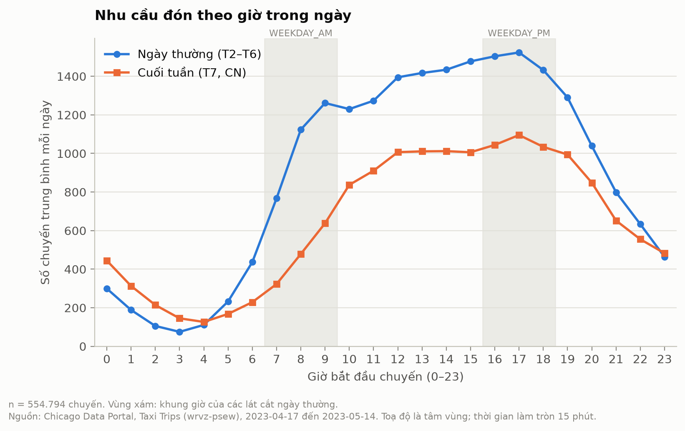
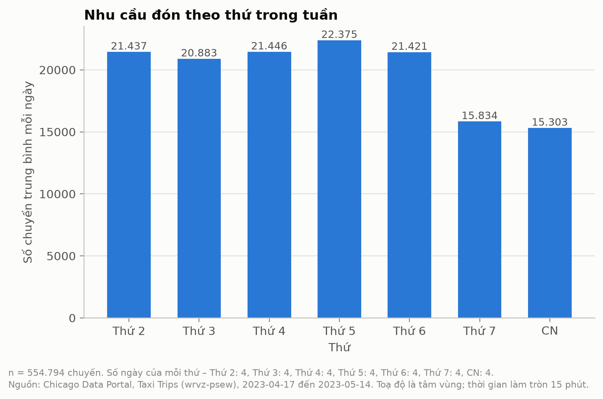
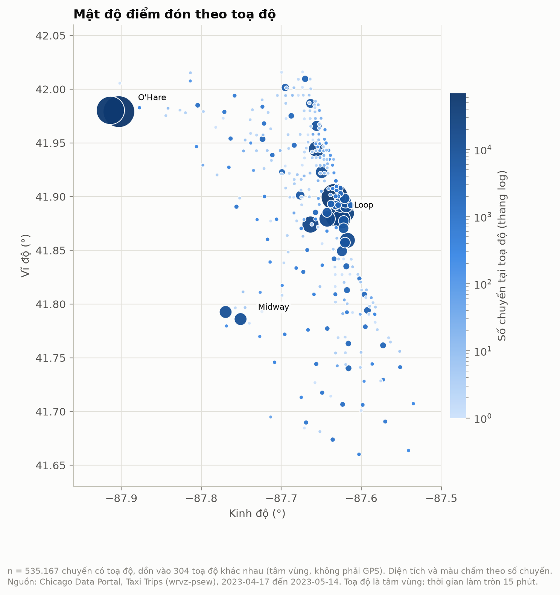
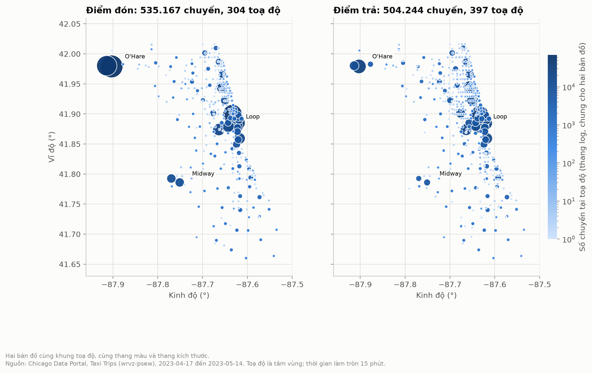
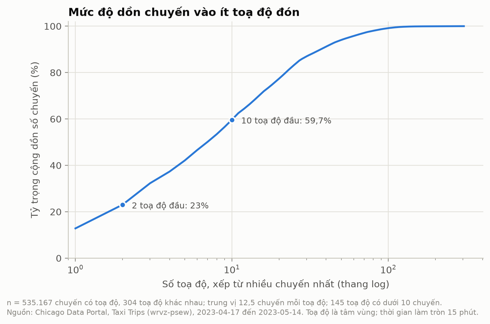
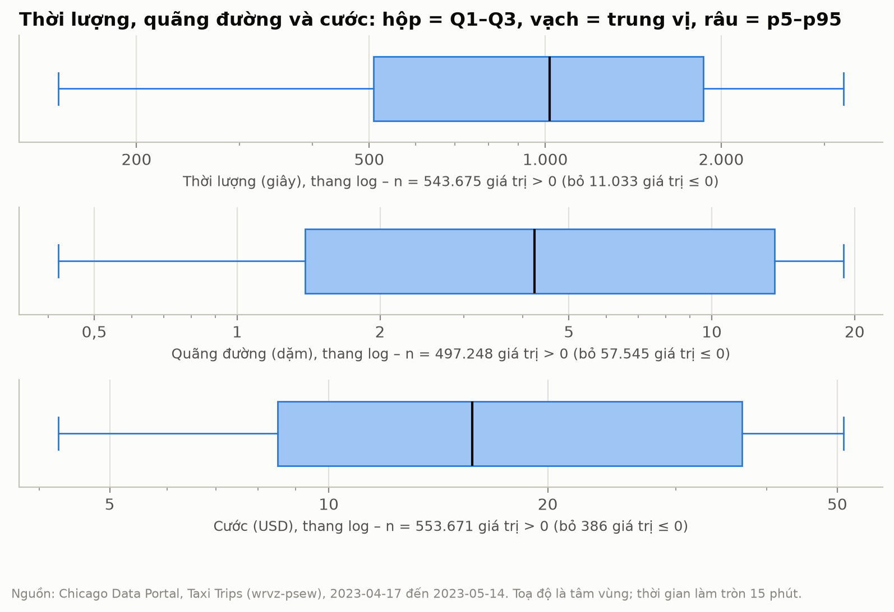
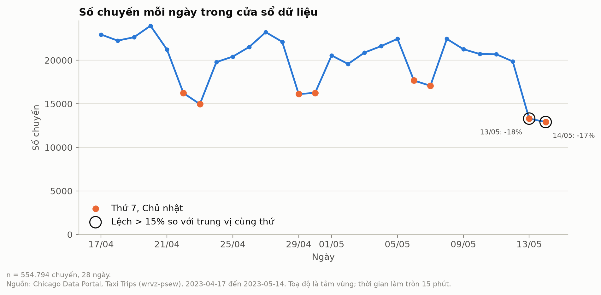
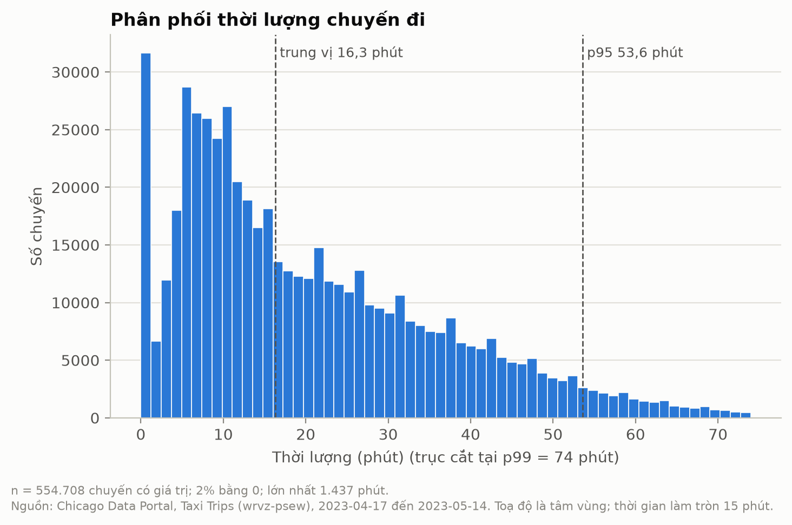
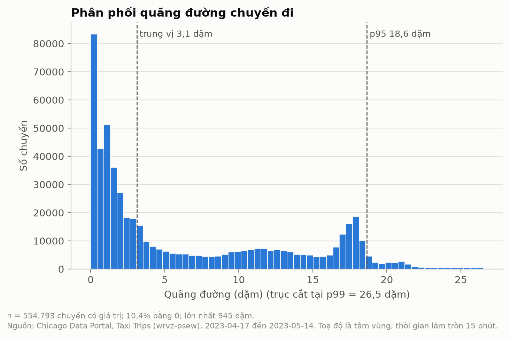

📅 Phân tích Thời gian & Chu kỳ Đón xe
🕒 Ma trận Nhiệt Giờ × Thứ
05_hour_weekday_heatmap.png
🔍 Phóng to
⏰ Phân phối Lượt đón theo Giờ (24h)
03_pickups_by_hour.png
🔍 Phóng to
📆 Phân phối theo Ngày trong tuần
04_pickups_by_weekday.png
🔍 Phóng to
📍 Phân tích Không gian & Địa lý Đón/Trả
🗺️ Bản đồ Mật độ Điểm đón (Density)
06_pickup_density_map.png
🔍 Phóng to
🔄 Đối chiếu Điểm đón vs Điểm trả
07_pickup_vs_dropoff_map.png
🔍 Phóng to
📈 Tích lũy Độ tập trung Toạ độ
10_pickup_coord_concentration.png
🔍 Phóng to
📊 Phân tích Ngoại lai & Xu hướng Thời gian Dài hạn
📦 Boxplots Thời lượng & Quãng đường
08_boxplots_log.png
🔍 Phóng to
📈 Xu hướng Lượt đón theo Từng ngày (4 Tuần)
09_trips_by_date.png
🔍 Phóng to
⏱️ Phân phối Thời lượng & Quãng đường
01 & 02 Histogram
🔍 Xem thời lượng

🔍 Xem quãng đường
🧹 Nhật ký Quy trình Làm sạch Dữ liệu 12 Bước (Data Cleaning Log)
| Bước | Mã quy tắc (Rule ID) | Hành động | Điều kiện kiểm tra | Lý do kỹ thuật | Số dòng trước | Khớp điều kiện | Số dòng sau | Tỷ lệ (% Raw) |
|---|---|---|---|---|---|---|---|---|
| 1 | trip_id_null |
drop | trip_id rỗng | Không có khoá chính để nối nhãn cụm | 554.794 | 0 | 554.794 | 0.00% |
| 2 | trip_id_duplicate |
drop | trip_id lặp lại | Mỗi lượt đón chỉ được đếm duy nhất 1 lần | 554.794 | 0 | 554.794 | 0.00% |
| 3 | start_time_invalid |
drop | timestamp rỗng hoặc hỏng | Không gán được giờ, thứ, lát cắt thời gian | 554.794 | 0 | 554.794 | 0.00% |
| 4 | start_time_outside_window |
drop | nằm ngoài 17/04 - 14/05/2023 | Nằm ngoài phạm vi 4 tuần nghiên cứu | 554.794 | 0 | 554.794 | 0.00% |
| 5 | pickup_coord_missing |
drop | thiếu pickup latitude / longitude | Không tính được toạ độ không gian | 554.794 | 19.627 | 535.167 | 3.54% |
| 6 | pickup_coord_out_of_range |
drop | lat ngoài [-90, 90] / lon ngoài [-180, 180] | Toạ độ không hợp lệ hệ WGS84 | 535.167 | 0 | 535.167 | 0.00% |
| 7 | pickup_outside_chicago_bbox |
drop | toạ độ ngoài khung bounding box Chicago | Ngoài vùng nghiên cứu | 535.167 | 0 | 535.167 | 0.00% |
| 8 | flag_zero_duration |
flag | trip_seconds ≤ 0 hoặc rỗng | Đánh dấu không dùng cho phân tích tốc độ | 535.167 | 9.975 | 535.167 | 1.80% |
| 9 | flag_zero_distance |
flag | trip_miles ≤ 0 hoặc rỗng | Đánh dấu lỗi cảm biến quãng đường | 535.167 | 52.976 | 535.167 | 9.55% |
| 10 | flag_speed_gt_80 |
flag | tốc độ tính toán > 80 mph | Tốc độ phi lý trong đô thị | 535.167 | 353 | 535.167 | 0.06% |
| 11 | flag_end_before_start |
flag | thời điểm trả xe trước thời điểm đón | Thời điểm trả sai, điểm đón vẫn dùng được | 535.167 | 5 | 535.167 | 0.00% |
| 12 | flag_missing_area |
flag | mã khu vực rỗng (vẫn có toạ độ) | Không gán được mã tên khu hành chính | 535.167 | 261 | 535.167 | 0.05% |